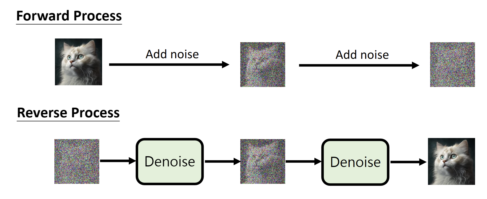
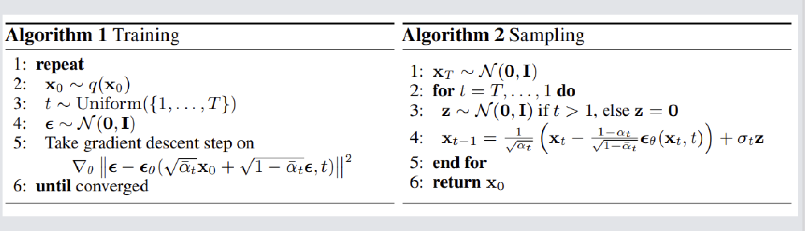
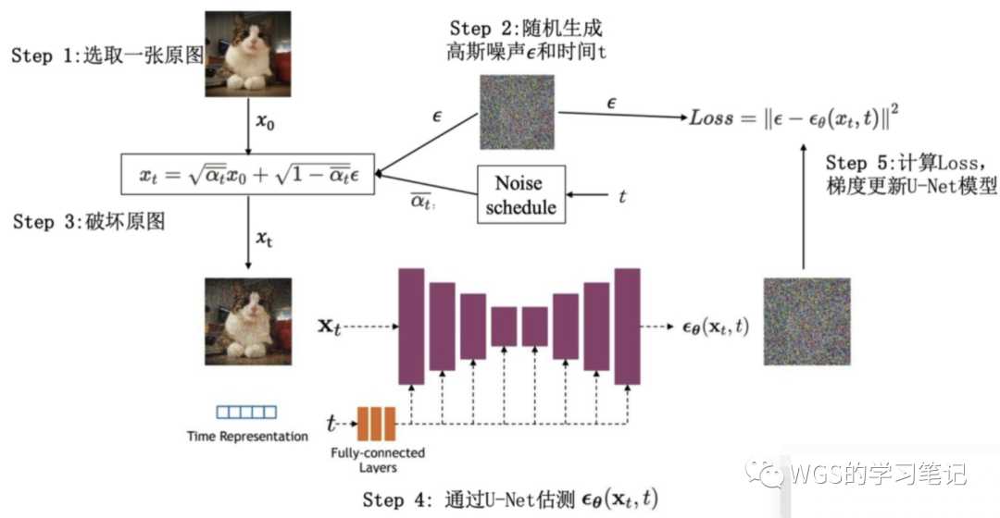
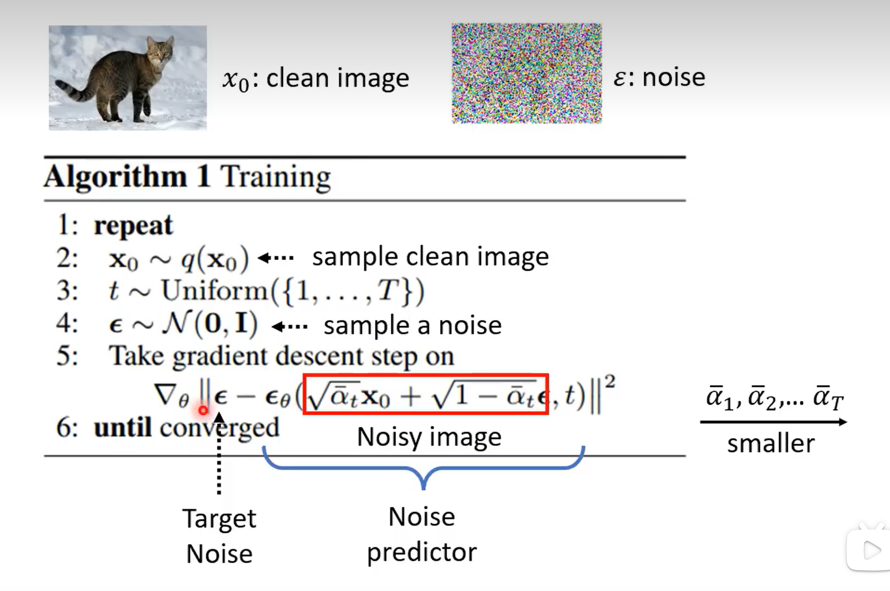
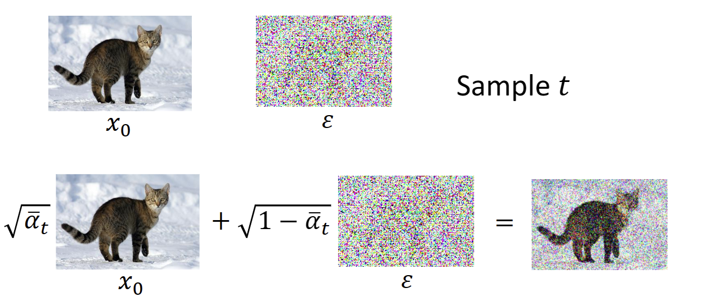
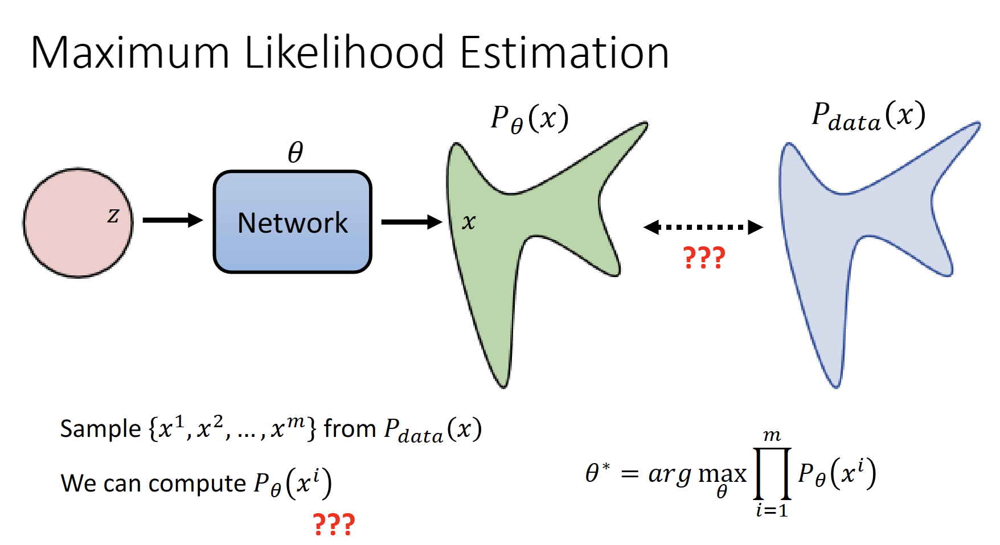
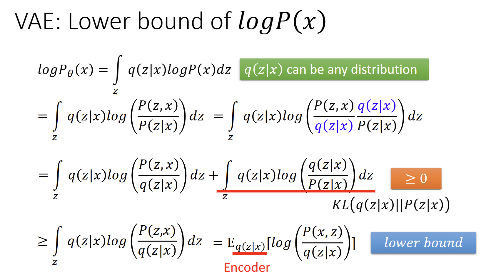
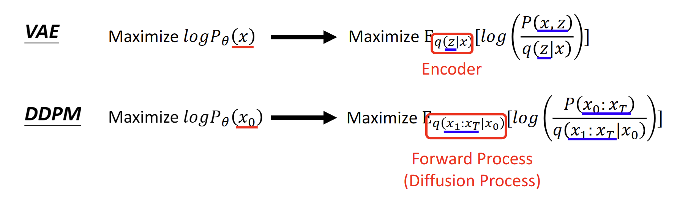

整体架构
DDPM可分为以下两个部分
其中Denoise内部：输入图片+step，预测其噪声
- 为什么step也是一个重要的输入：从噪声到原图，所要预测的噪声强度是不同的
训练和推理部分如下所示
训练过程
训练过程如下所示，Unet里有一个位置编码，是关于时间步的，每个时间步是有一个线性调度器的，每个时间添加的噪声的方差是不一样的，所以将时间步作为编码嵌入的话，可以将模型预测的噪声更加的准确
其中，损失函数如下：
$$ \text { Loss }=\left\|\varepsilon-\varepsilon_{\theta}\left(x_t, t\right)\right\|^2=\left\|\varepsilon-\varepsilon_{\theta}\left(\sqrt{\bar{\alpha}_t}x_0+\sqrt{1-\bar{\alpha}_t}\varepsilon_t, t\right)\right\|^2 $$
t为step，t越大，$a_T$越小，加的噪声越多
- 先进行
forward process，生成每个step对应的图片和噪声数据集，即target noise - 实际训练时，t是随机取值，不用按顺序从大到小
- 目标是noise predictor预测的噪声值接近真实噪声
- noisy image 如下： 
数学推导
- $\alpha_t=1-\beta_t, \beta_t$要越大越好，论文中从0.0001到0.02；
- 方差参数$\beta_t$可以固定为一个常数，也可以选择作为时间段的一个时间表。可以定义一个方差表，它可以是线性的、二次的、余弦的等等
- 最初的DDPM作者利用了一个从到增加的线性时间表，$\beta_t$从$10^{-4}$到$0.02$线性增加
- $\bar{\alpha}=\prod_{s=1}^t \alpha_s$，为累乘
- $x_t=\sqrt{\alpha_t} x_{t-1}+\sqrt{1-\alpha_t} \varepsilon_t, \varepsilon_t \sim N(0,1)$，每一时刻的噪声均独立
推导过程如下，从第一步到第二步用到了重参数技巧：
$\begin{aligned} q\left(x_t \mid x_{t-1}\right) & =N\left(x_t ; \sqrt{\alpha_t} x_{t-1},\left(1-\alpha_t\right) I\right) \\\ & =\underbrace{\sqrt{\alpha_t} x_{t-1}}_{x_{t-2} \text { 来表示 } x_{t-1}}+\sqrt{1-\alpha_t} \varepsilon_t \\\ & =\sqrt{\alpha_t}\left(\sqrt{\alpha_{t-1}} x_{t-2}+\sqrt{1-\alpha_{t-1}} \varepsilon_{t-1}\right)+\sqrt{1-\alpha_t} \varepsilon_t \\\ & =\sqrt{\alpha_t \alpha_{t-1}} x_{t-2}+\underbrace{\sqrt{\alpha_t-\alpha_t \alpha_{t-1}} \varepsilon_{t-1}+\sqrt{1-\alpha_t} \varepsilon_t}_{\text {两个独立正态分布相加 }} \\\ & =\sqrt{\alpha_t \alpha_{t-1}} x_{t-2}+\sqrt{1-\alpha_t \alpha_{t-1}} \varepsilon \\\ & \ldots \\\ & =\sqrt{\bar{\alpha}_t} x_0+\sqrt{1-\bar{\alpha}_t} \varepsilon \\\ & \therefore q\left(x_t \mid x_0\right)=N\left(x_t ; \sqrt{\bar{\alpha}_t} x_0, \sqrt{1-\bar{\alpha}_t} I\right) \end{aligned}$
推理过程（采样）
采样过程中，根据给定的噪声和condition（step, text…），输出对应的采样图
- 根据噪声$x_t$预测$x_{t-1}$
- 加上采样的噪声$z$，如果是最后一次采样（$t==1$），就不添加噪声
数学推导
首先我们来看常见生成模型的目标函数，其中$z$为图像的隐空间表示，Network一般为一个Decoder
给定网络参数$\theta$，我们要让输出$x$的分布$P_{\theta}(x)$尽可能接近$P_{data}(x)$： $$ \text { Sample }\left\{x^1, x^2, \ldots, x^m\right\} \text { from } P_{\text {data }}(x)\\\ \theta^{*}=\arg \max _{\theta} \prod_{i=1}^m P_{\theta}\left(x^i\right)=\arg \max _{\theta} \log \prod_{i=1}^m P_{\theta}\left(x^i\right) \\=\arg \max _{\theta} \sum_{i=1}^m \log P_{\theta}\left(x^i\right)$$ 我们从输入随机采样得到图片$x^i$，目标是$P_{\theta}(x^i)$有最大值，即最大似然估计
*补充知识点：
期望是对随机变量的数值进行加权平均的概念。当随机变量是连续型变量时，期望可以通过积分来计算。设$X$是一个连续型随机变量，其概率密度函数为$f(x)$。对于一个函数$g(X)$，它关于X的期望可以表示为 $$ E[g(X)] = ∫g(x) f(x) dx $$
**重参数化：**使计算过程可导 $$z \sim N\left(z, \mu, \sigma^2 I\right) \longrightarrow z=\mu+\sigma \cdot \epsilon, \epsilon \sim N(0, I)$$
求$P_{\theta}(x)$的下界，使其最大：
同样的，推导可得，DDPM的下界：
以下公式参考[2]，详细过程见原文，这边只写简化后的结果 $$-\log \left(p_{\theta}\left(x_0\right)\right) \leq \underbrace{\log \left(\frac{q\left(x_{1: T} \mid x_0\right)}{p_{\theta}\left(x_{0: T}\right)}\right)}_{\text {变分下界, 可以优化它 }} \\ \log \left(\frac{q\left(x_{1: T} \mid x_0\right)}{p_{\theta}\left(x_{0: T}\right)}\right) =\underbrace{{D_{K L}\left(q\left(x_t \mid x_0\right) \| p\left(x_T\right)\right)}}_{q \text { 只是个正向过程没有可学习参数 }}+\sum_{t=2}^T D_{K L}\left(q\left(x_{t-1} \mid x_t, x_0\right) \| p_{\theta}\left(x_{t-1} \mid x_t\right)\right)-\log \left(p_{\theta}\left(x_0 \mid x_1\right)\right)$$
-
第一项KL散度可以忽略，因为q只是个正向过程，没有可学习参数，换句话说就是它是固定的。
-
第二项KL散度，左边和右边都是正态分布，左边的$q\left(x_{t-1} \mid x_t, x_0\right)$是真实值，我们想求的；右边的${p_{\theta}\left(x_{t-1} \mid x_t\right)}$是神经网络估计的
$$\sum_{t=2}^T D_{K L}(\underbrace{q\left(x_{t-1} \mid x_t, x_0\right)}_{N\left(x_{t-1} ; \tilde{\mu_t}\left(x_t, x_0\right), \tilde{\beta_t} I\right)} \| \overbrace{p_{\theta}\left(x_{t-1} \mid x_t\right)}^{N\left(x_{t-1} ; \mu_{\theta}\left(x_t, t\right), \beta I\right.})$$
-
首先，通过变化，可以获得$\tilde{\mu_t}$的值，这里的$\varepsilon$为真实噪声值 $$\\ \begin{aligned} \underbrace{\tilde{\mu_t}\left(x_t, x_0\right)}_{\text {不再依赖 } x_0} & & =\frac1{\sqrt{\alpha_t}}\left(x_t-\frac{\beta_t}{\sqrt{1-\bar{\alpha}_t}} \varepsilon\right) \end{aligned}$$
-
我们需要减小KL散度，由于方差是固定的，我们无法优化，所以需要将它们的均值之差减小，原论文中使用的是简单的均方误差： $$\begin{aligned} L_t & =\frac1{2 \sigma_t^2}\left\|\tilde{\mu}_t\left(x_t, x_0\right)-\mu_{\theta}\left(x_t, t\right)\right\|^2 \\ & =\frac1{2 \sigma_t^2}\left\|\frac1{\sqrt{\alpha_t}}\left(x_t-\frac{\beta_t}{\sqrt{1-\bar{\alpha}_t}} \varepsilon\right)-\frac1{\sqrt{\alpha_t}}\left(x_t-\frac{\beta_t}{\sqrt{1-\bar{\alpha}_t}} \varepsilon_{\theta}\left(x_t, t\right)\right)\right\|^2 \\ & =\frac{\beta_t^2}{2 \sigma_t^2 \alpha_t\left(1-\bar{\alpha}_t\right)} \underbrace{\left\|\varepsilon-\varepsilon_{\theta}\left(x_t, t\right)\right\|^2}_{m s e} \\ & ->\left\|\varepsilon-\varepsilon_{\theta}\left(x_t, t\right)\right\|^2=\left\|\varepsilon-\varepsilon_{\theta}\left(\sqrt{\bar{\alpha}_t} x_0+\sqrt{1-\bar{\alpha}_t} \varepsilon_t, t\right)\right\|^2 \end{aligned}$$
-
最终，DDPM的过程可概括为如下： $$ x_{t-1}=N\left(x_{t-1} ; \frac1{\sqrt{\alpha_t}}\left(x_t-\frac{\beta_t}{\sqrt{1-\bar{\alpha}_t}} \varepsilon_{\theta}\left(x_t, t\right)\right), \Sigma_{\theta}\left(x_t, t\right)\right) $$
- 每个时间步通过$x_t$和$t$来预测高斯噪声$\varepsilon_{\theta}$，根据上面公式计算得到均值$\mu$
- 得到方差$\Sigma_{\theta}\left(x_t, t\right)$；
- 代入公式得到$q\left(x_{t-1} \mid x_t, x_0\right)$，利用重参数化得到$x_{t-1}$
- 因为我们计算了$D_{K L}\left(q\left(x_{t-1} \mid x_t, x_0\right) \| p_{\theta}\left(x_{t-1} \mid x_t\right)\right)$，故可以利用$q\left(x_{t-1} \mid x_t\right)$来近似$p\left(x_{t-1} \mid x_t\right)$
参考资料: